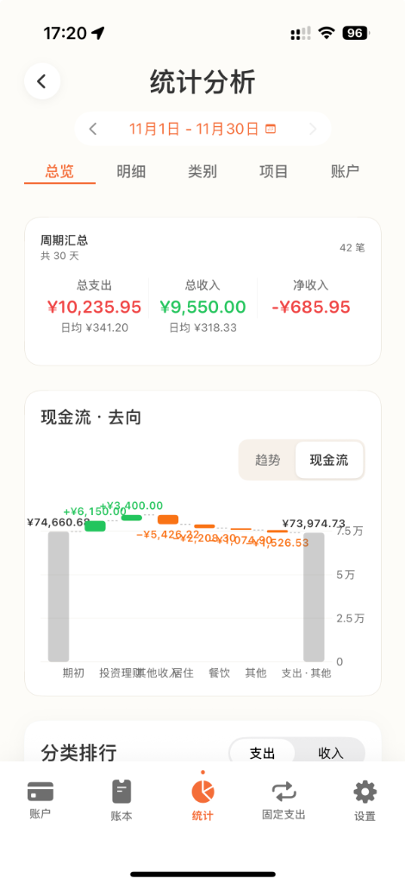

七条视觉原则
1 · 先给结论，再给图每张卡顶部一个大数字加一句话（如「净流出 ¥685.95」）。图只负责解释这个数字。
2 · 一图一个主角同屏最多两种语义色，其余系列一律退成石灰色。选中项保持原色，其它淡到 40%。
3 · 标签永不相撞金额放进自己的列或读数区，不挤在柱端。放不下就不标，交给点按读数。
4 · 存量与流量分开画余额是存量，收支是流量，二者量级差几十倍，不能共用一根从 0 起的轴。
5 · 网格退到发丝不画轴线；最多 2 条 7% 透明度的横向发丝线，刻度文字缩进图内。
6 · 颜色从纸面长出来弃用 Tailwind 原色（#3B82F6/#22C55E），改用降饱和的苔绿、赭橙、墨蓝，和 #FDFCF8 纸底同温。
7 · 中文标签横着放分类名多的图优先横向排布，名字不旋转、不缩字、不截断。
V4 色板（深浅色各一套，点右上切换）
苔绿流入 / 收入 / 达成
赭橙流出 / 支出（品牌橙同族）
墨蓝余额 / 存量 / 测量值
石灰其余 / 上期 / 非主角
麦金分类第 3 色
藕紫分类第 4 色
青瓷分类第 5 色
砖粉分类第 6 色（分类色板刻意不含绿，绿只表示流入/达成）
① 现金流 · 去向（本轮主修）
现状（真机 11-15 截图）

期初/期末锚柱从 0 画到 7.4 万，流水柱只剩 1–8% 的高度；柱端金额互相压住，横轴分类名挤在一起。「其他」和「支出·其他」并排出现，读起来像重复。
V4 方案：横向瀑布
收支与余额
11 月 · 净流出
−¥685.95
余额 ¥74,660.68→¥73,974.73
流入 ¥9,550.00 · 流出 ¥10,235.95
点按任一行查看占比
为什么这样画：期初水位当作零线，柱子只画「钱的流动」，所以 ¥1,075 也有足够长度。期初、期末不再画柱，余额写进顶部一句话。金额统一放右列，分类名放左列，横着排永远不会相撞。合并项改名为「其余 3 类」，不再和真实分类「其他」撞名。
② 收支趋势（同卡「趋势」tab）
V4 方案
收支与余额
点按月份切换；余额单独一区、单独比例尺。
要点
收入苔绿、支出赭橙，细柱成对、顶部圆角。选中月份保持原色，其余淡到 40%。
余额是存量，挪到下方单独一区：墨蓝细线加极淡面积，比例尺按自身最高、最低值留余量，不从 0 起，涨跌才看得出。末点直接写数值，不需要图例。
读数区固定在图上方，三格数字等宽对齐，滑动时数字滚动（沿用已实现的 numericText）。
③ 支出构成（类别卡）
V4 方案：比例条 + 排行
支出构成
11 月 · 支出
¥10,235.95
居住占一半以上，比上月多 ¥820
要点
环形图配引线，在 6 类以上时会互相打架。改成一根全宽比例条，下面直接排行，颜色和名字在同一行对应，不靠引线。
前五类按色板顺序着色，「其余」固定用石灰色，永远排在最后。点按某一行，比例条上对应段保持原色，其余段变淡。
（「构成⇄趋势」tab 的堆叠面积沿用同一色板，不再出现五种蓝。）
④ 习惯趋势 · 弹层迷你趋势
V4 方案：习惯回顾 · 每周完成
晨跑
近 8 周本周
5 / 5 次
连续 3 周达标
V4 方案：记录弹层 · 迷你趋势
体重
较上次 −0.468.2 kg
达标周用苔绿，未达标退成石灰色，目标线是一条带「目标 5」字样的发丝虚线。迷你趋势只留一条墨蓝线、末点白芯圆点和首尾日期，徽标统一用中性底色。